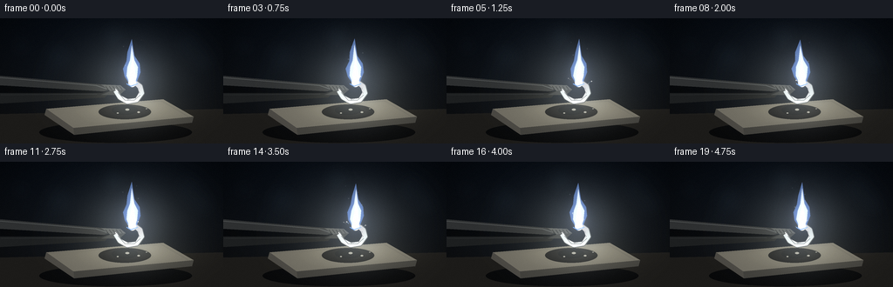
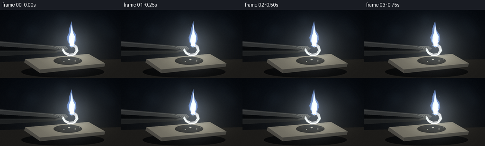

CODING AGENTS AS PIXEL WORLD MODELS
traex/GPT-5.6-Sol · phygen_127
点击播放 · 原生 RGB 像素
逐轮保存的候选
回放视频、检查图与代码变化。
每份候选均可单独播放。实际图片检查记录在下方工具轨迹中。
候选 01播放与检查图
点击播放 · 原生 RGB 像素


展开代码变化
--- 上一保存版本
+++ 本次保存版本
@@ -0,0 +1,213 @@
+from pathlib import Path
+import math
+import numpy as np
+from PIL import Image, ImageDraw, ImageFilter
+import artifact_io
+
+# Procedural macro shot of burning magnesium. All imagery is generated from geometry.
+W, H, N, FPS = 256, 144, 20, 4.0
+S = 4
+w, h = W*S, H*S
+rng = np.random.default_rng(127)
+
+# Static fine sensor/room texture, kept fixed to avoid video shimmer.
+noise = rng.normal(0, 1, (h, w, 1)).astype(np.float32)
+yy, xx = np.mgrid[0:h, 0:w].astype(np.float32)
+X, Y = xx/S, yy/S
+
+# Persistent spark definitions create smooth trajectories across frames.
+sparks = []
+for i in range(34):
+ birth = rng.uniform(-.25, 4.8)
+ life = rng.uniform(.30, .85)
+ angle = rng.uniform(math.radians(195), math.radians(345)) if i % 3 else rng.uniform(math.radians(205), math.radians(335))
+ speed = rng.uniform(15, 43)
+ sparks.append((birth, life, angle, speed, rng.uniform(.35, .8), rng.uniform(-2, 2)))
+
+# Stable background bokeh points.
+bokeh = [(rng.uniform(12,244), rng.uniform(8,79), rng.uniform(7,19), rng.uniform(.04,.12)) for _ in range(9)]
+
+def rgba_layer():
+ return Image.new('RGBA', (w, h), (0,0,0,0))
+
+def poly(draw, pts, fill):
+ draw.polygon([(int(x*S), int(y*S)) for x,y in pts], fill=fill)
+
+def line(draw, pts, fill, width):
+ draw.line([(int(x*S), int(y*S)) for x,y in pts], fill=fill, width=max(1,int(width*S)), joint='curve')
+
+def ellipse(draw, box, fill):
+ draw.ellipse(tuple(int(v*S) for v in box), fill=fill)
+
+def composite(base, lay):
+ return Image.alpha_composite(base, lay)
+
+def add_glow(arr, cx, cy, sx, sy, color, amount):
+ g = np.exp(-0.5*(((X-cx)/sx)**2 + ((Y-cy)/sy)**2))[...,None]
+ arr += g * np.array(color, np.float32)[None,None,:] * amount
+
+
+def make_frame(k):
+ t = k/FPS
+ # Cool dark workshop background and warmer bench plane.
+ v = np.clip(Y/H, 0, 1)[...,None]
+ base = np.zeros((h,w,3), np.float32)
+ base[:] = (np.array([7,12,19])*(1-v) + np.array([18,19,20])*v)
+ # subdued central background glow / vignette
+ central = np.exp(-(((X-142)/120)**2 + ((Y-72)/85)**2))[...,None]
+ base += central*np.array([5,7,10])
+ vign = np.clip(1 - .26*((X-W/2)/(W/2))**2 - .20*((Y-H/2)/(H/2))**2, .57, 1)[...,None]
+ base *= vign
+ base += noise*.55
+ base = np.clip(base,0,255).astype(np.uint8)
+ im = Image.fromarray(base, 'RGB').convert('RGBA')
+
+ # Defocused laboratory highlights.
+ b = rgba_layer(); d = ImageDraw.Draw(b)
+ for bx,by,br,op in bokeh:
+ ellipse(d,(bx-br,by-br,bx+br,by+br),(55,75,91,int(255*op)))
+ b = b.filter(ImageFilter.GaussianBlur(8*S))
+ im = composite(im,b)
+
+ # Bench, tile shadow, heatproof ceramic slab.
+ geo = rgba_layer(); d=ImageDraw.Draw(geo)
+ poly(d, [(0,110),(256,104),(256,144),(0,144)], (28,27,25,255))
+ line(d, [(0,111),(256,105)], (56,54,49,105), .7)
+ ellipse(d,(45,119,220,143),(0,0,0,115))
+ # top plane and beveled sides
+ poly(d,[(53,104),(187,93),(222,113),(84,126)],(107,104,94,255))
+ poly(d,[(84,126),(222,113),(220,120),(85,134)],(62,61,57,255))
+ poly(d,[(53,104),(84,126),(85,134),(51,111)],(72,70,65,255))
+ line(d,[(58,105),(185,95),(216,113)],(171,165,147,130),.7)
+ # scorch marks under combustion
+ ellipse(d,(113,99,173,116),(39,35,31,85)); ellipse(d,(128,100,158,111),(23,21,19,70))
+ im=composite(im,geo)
+
+ # Gentle moving smoke behind flame: translucent looping wisps.
+ smoke=rgba_layer(); ds=ImageDraw.Draw(smoke)
+ for j in range(6):
+ phase = t*.34 + j*.87
+ rise = (phase*23) % 72
+ sy0 = 63-rise
+ sx0 = 151 + 6*math.sin(phase*2.1+j)
+ a = int(25*(1-rise/76))
+ if a>0:
+ line(ds,[(sx0,sy0+22),(sx0+5*math.sin(phase+1),sy0+10),(sx0+10*math.sin(phase*1.4),sy0-4)],(117,136,148,a),3.2+j*.35)
+ smoke=smoke.filter(ImageFilter.GaussianBlur(5.5*S))
+ im=composite(im,smoke)
+
+ # Tongs entering frame from left; dark steel body with highlight.
+ tong=rgba_layer(); d=ImageDraw.Draw(tong)
+ # blurred tong shadow
+ line(d,[(-12,80),(64,84),(121,82)],(0,0,0,100),10)
+ # lower and upper arms converge around ribbon
+ poly(d,[(-8,71),(0,66),(117,76),(129,81),(119,84),(0,77)],(46,48,49,255))
+ poly(d,[(-8,91),(0,86),(116,86),(129,82),(120,91),(0,98)],(29,31,32,255))
+ line(d,[(0,68),(110,77),(122,81)],(104,107,105,180),1.0)
+ line(d,[(1,88),(111,87)],(75,77,75,125),.8)
+ # serrated gripping jaws
+ poly(d,[(116,76),(138,77),(144,82),(127,84)],(71,73,72,255))
+ poly(d,[(116,88),(128,83),(144,82),(137,88)],(48,50,50,255))
+ for q in range(5):
+ line(d,[(121+q*4,78),(124+q*4,82)],(22,23,23,200),.7)
+ im=composite(im,tong)
+
+ # Magnesium ribbon: broad reflective curled silver strip, progressively charred near tip.
+ ribbon=rgba_layer(); d=ImageDraw.Draw(ribbon)
+ # ribbon extends from clamp and curls upward toward burning end
+ center=[(132,83),(137,91),(146,96),(157,94),(163,86),(161,78),(154,73),(147,74)]
+ line(d,center,(58,61,62,255),6.0)
+ line(d,center,(184,190,190,255),4.5)
+ line(d,[(132,81),(138,89),(146,93),(156,92),(160,85),(158,79),(153,76)],(235,239,236,230),1.2)
+ line(d,[(135,85),(143,94),(154,94),(161,88)],(92,98,99,170),.7)
+ # brittle white oxide and grey crust near combustion point
+ burnx = 151.5 + .35*math.sin(t*.8)
+ burny = 73.8 + .2*math.cos(t)
+ line(d,[(160,79),(156,75),(151,74)],(208,207,195,255),5.0)
+ ellipse(d,(147.8,71.3,154.8,77.2),(232,230,211,255))
+ # oxide flakes on tile
+ for ox,oy,rr in [(146,105,2.3),(159,108,1.7),(135,109,1.2),(168,104,.9)]:
+ ellipse(d,(ox-rr,oy-rr*.45,ox+rr,oy+rr*.45),(189,187,174,175))
+ im=composite(im,ribbon)
+
+ # Illumination cast by the unusually intense white magnesium flame.
+ arr=np.asarray(im.convert('RGB')).astype(np.float32)
+ pulse = .96 + .045*math.sin(t*11.7)+.025*math.sin(t*23.1+1.3)
+ add_glow(arr,burnx,burny,42,34,(1.0,1.0,.89),42*pulse)
+ add_glow(arr,burnx,burny,19,24,(.73,.83,1.0),46*pulse)
+ add_glow(arr,burnx,105,41,10,(1.0,.95,.72),15*pulse) # tile reflection
+ im=Image.fromarray(np.clip(arr,0,255).astype(np.uint8),'RGB').convert('RGBA')
+
+ # Soft bloom built before crisp flame.
+ bloom=rgba_layer(); db=ImageDraw.Draw(bloom)
+ flick = 1.6*math.sin(t*13.1)+.9*math.sin(t*21.7+.4)
+ # slightly asymmetrical violet-blue aura around white core
+ poly(db,[(150,75),(141+math.sin(t*7),61),(145,46),(151+flick*.3,25-flick),(158,46),(161+math.sin(t*9),60),(156,76)],(156,188,255,105))
+ ellipse(db,(141,56,163,83),(202,220,255,185))
+ bloom=bloom.filter(ImageFilter.GaussianBlur(10*S))
+ im=composite(im,bloom)
+
+ # Layered, crisp flame, predominantly brilliant white with cool perimeter.
+ flame=rgba_layer(); d=ImageDraw.Draw(flame)
+ sway=1.15*math.sin(t*5.6)+.55*math.sin(t*11.3)
+ # blue-violet outer envelope
+ outer=[(149,76),(143+sway*.2,67),(141+sway,58),(145+sway*.8,49),(146+sway*1.4,39),
+ (151+sway*.9,24+flick*.45),(154+sway*.6,43),(160+sway*.2,52),(161,62),(157,72),(154,77)]
+ poly(d,outer,(132,174,255,150))
+ # pale main body
+ mid=[(149,76),(145+sway*.2,66),(146+sway*.8,56),(149+sway*.8,48),(151+sway,31+flick*.4),
+ (154+sway*.45,48),(158,56),(157,67),(154,76)]
+ poly(d,mid,(226,239,255,240))
+ # saturated white hot core (magnesium signature)
+ core=[(150,76),(148+sway*.2,66),(150+sway*.45,57),(152+sway*.55,43+flick*.25),(154+sway*.25,58),(156,67),(154,76)]
+ poly(d,core,(255,255,247,255))
+ ellipse(d,(147.4,69.5,156.2,79.0),(255,255,255,255))
+ # isolated blue basal edge
+ line(d,[(145,75),(150,78),(158,75)],(136,184,255,215),1.1)
+ im=composite(im,flame)
+
+ # Coherent ejecta/sparks and incandescent white oxide particles.
+ sp=rgba_layer(); d=ImageDraw.Draw(sp)
+ for idx,(birth,life,ang,speed,size,jit) in enumerate(sparks):
+ age=t-birth
+ if 0 <= age <= life:
+ # ejection origin at burning tip, gravity pulls down
+ px=152 + math.cos(ang)*speed*age + jit*math.sin(age*9)
+ py=73 + math.sin(ang)*speed*age + 22*age*age
+ fade=(1-age/life)**.65
+ tail=.11*speed
+ tx=px-math.cos(ang)*tail*min(age/.2,1)
+ ty=py-math.sin(ang)*tail*min(age/.2,1)
+ col=(255,255,238,int(235*fade)) if idx%4 else (170,203,255,int(210*fade))
+ line(d,[(tx,ty),(px,py)],col,size)
+ ellipse(d,(px-size,py-size,px+size,py+size),(255,255,249,int(255*fade)))
+ im=composite(im,sp)
+
+ # A few tiny rising ash motes for depth.
+ motes=rgba_layer(); dm=ImageDraw.Draw(motes)
+ for j in range(7):
+ a=(t*.19+j*.143)%1
+ mx=151+math.sin(j*2.3+t*.8)* (5+8*a)
+ my=69-a*51
+ rr=.45+.35*(1-a)
+ ellipse(dm,(mx-rr,my-rr,mx+rr,my+rr),(202,214,221,int(85*(1-a))))
+ im=composite(im,motes)
+
+ # Optical bloom on final highlights without destroying crisp contours.
+ bright=im.filter(ImageFilter.GaussianBlur(2.0*S))
+ glow=np.asarray(bright.convert('RGB')).astype(np.float32)
+ src=np.asarray(im.convert('RGB')).astype(np.float32)
+ mask=np.clip((glow.max(axis=2,keepdims=True)-110)/145,0,1)
+ out=np.clip(src + glow*mask*.14,0,255).astype(np.uint8)
+
+ # Downsample for antialiased final frame and add restrained film grain.
+ final=Image.fromarray(out,'RGB').resize((W,H),Image.Resampling.LANCZOS)
+ f=np.asarray(final).astype(np.int16)
+ framegrain=np.random.default_rng(900+k).normal(0,.45,(H,W,1))
+ f=np.clip(f+framegrain,0,255).astype(np.uint8)
+ return f
+
+frames=np.stack([make_frame(k) for k in range(N)])
+assert frames.shape==(N,H,W,3) and frames.dtype==np.uint8
+artifact_io.save(frames, Path(__file__).resolve().parent)
+print('saved',frames.shape,frames.dtype)
可观测工具轨迹
实际执行的命令与返回图片。
命令 1exit 0
/bin/bash -lc "cat prompt.txt && printf '\\n--- GENERATION_RULES ---\\n' && cat GENERATION_RULES.md && printf '\\n--- TASK_SPEC ---\\n' && cat task_spec.json"
命令 2exit 0
/bin/bash -lc "find . -maxdepth 2 -type f -printf '%p\\n' | sort && printf '\\n--- binaries ---\\n' && command -v ffmpeg || true && command -v python3 || true"
命令 3exit 0
/bin/bash -lc 'cat artifact_io.py'
命令 4exit 0
/bin/bash -lc "cat > generate.py <<'PY'
from pathlib import Path
import math
import numpy as np
from PIL import Image, ImageDraw, ImageFilter
import artifact_io
# Procedural macro shot of burning magnesium. All imagery is generated from geometry.
W, H, N, FPS = 256, 144, 20, 4.0
S = 4
w, h = W*S, H*S
rng = np.random.default_rng(127)
# Static fine sensor/room texture, kept fixed to avoid video shimmer.
noise = rng.normal(0, 1, (h, w, 1)).astype(np.float32)
yy, xx = np.mgrid[0:h, 0:w].astype(np.float32)
X, Y = xx/S, yy/S
# Persistent spark definitions create smooth trajectories across frames.
sparks = []
for i in range(34):
birth = rng.uniform(-.25, 4.8)
life = rng.uniform(.30, .85)
angle = rng.uniform(math.radians(195), math.radians(345)) if i % 3 else rng.uniform(math.radians(205), math.radians(335))
speed = rng.uniform(15, 43)
sparks.append((birth, life, angle, speed, rng.uniform(.35, .8), rng.uniform(-2, 2)))
# Stable background bokeh points.
bokeh = [(rng.uniform(12,244), rng.uniform(8,79), rng.uniform(7,19), rng.uniform(.04,.12)) for _ in range(9)]
def rgba_layer():
return Image.new('RGBA', (w, h), (0,0,0,0))
def poly(draw, pts, fill):
draw.polygon([(int(x*S), int(y*S)) for x,y in pts], fill=fill)
def line(draw, pts, fill, width):
draw.line([(int(x*S), int(y*S)) for x,y in pts], fill=fill, width=max(1,int(width*S)), joint='curve')
def ellipse(draw, box, fill):
draw.ellipse(tuple(int(v*S) for v in box), fill=fill)
def composite(base, lay):
return Image.alpha_composite(base, lay)
def add_glow(arr, cx, cy, sx, sy, color, amount):
g = np.exp(-0.5*(((X-cx)/sx)**2 + ((Y-cy)/sy)**2))[...,None]
arr += g * np.array(color, np.float32)[None,None,:] * amount
def make_frame(k):
t = k/FPS
# Cool dark workshop background and warmer bench plane.
v = np.clip(Y/H, 0, 1)[...,None]
base = np.zeros((h,w,3), np.float32)
base[:] = (np.array([7,12,19])*(1-v) + np.array([18,19,20])*v)
# subdued central background glow / vignette
central = np.exp(-(((X-142)/120)**2 + ((Y-72)/85)**2))[...,None]
base += central*np.array([5,7,10])
vign = np.clip(1 - .26*((X-W/2)/(W/2))**2 - .20*((Y-H/2)/(H/2))**2, .57, 1)[...,None]
base *= vign
base += noise*.55
base = np.clip(base,0,255).astype(np.uint8)
im = Image.fromarray(base, 'RGB').convert('RGBA')
# Defocused laboratory highlights.
b = rgba_layer(); d = ImageDraw.Draw(b)
for bx,by,br,op in bokeh:
ellipse(d,(bx-br,by-br,bx+br,by+br),(55,75,91,int(255*op)))
b = b.filter(ImageFilter.GaussianBlur(8*S))
im = composite(im,b)
# Bench, tile shadow, heatproof ceramic slab.
geo = rgba_layer(); d=ImageDraw.Draw(geo)
poly(d, [(0,110),(256,104),(256,144),(0,144)], (28,27,25,255))
line(d, [(0,111),(256,105)], (56,54,49,105), .7)
ellipse(d,(45,119,220,143),(0,0,0,115))
# top plane and beveled sides
poly(d,[(53,104),(187,93),(222,113),(84,126)],(107,104,94,255))
poly(d,[(84,126),(222,113),(220,120),(85,134)],(62,61,57,255))
poly(d,[(53,104),(84,126),(85,134),(51,111)],(72,70,65,255))
line(d,[(58,105),(185,95),(216,113)],(171,165,147,130),.7)
# scorch marks under combustion
ellipse(d,(113,99,173,116),(39,35,31,85)); ellipse(d,(128,100,158,111),(23,21,19,70))
im=composite(im,geo)
# Gentle moving smoke behind flame: translucent looping wisps.
smoke=rgba_layer(); ds=ImageDraw.Draw(smoke)
for j in range(6):
phase = t*.34 + j*.87
rise = (phase*23) % 72
sy0 = 63-rise
sx0 = 151 + 6*math.sin(phase*2.1+j)
a = int(25*(1-rise/76))
if a>0:
line(ds,[(sx0,sy0+22),(sx0+5*math.sin(phase+1),sy0+10),(sx0+10*math.sin(phase*1.4),sy0-4)],(117,136,148,a),3.2+j*.35)
smoke=smoke.filter(ImageFilter.GaussianBlur(5.5*S))
im=composite(im,smoke)
# Tongs entering frame from left; dark steel body with highlight.
tong=rgba_layer(); d=ImageDraw.Draw(tong)
# blurred tong shadow
line(d,[(-12,80),(64,84),(121,82)],(0,0,0,100),10)
# lower and upper arms converge around ribbon
poly(d,[(-8,71),(0,66),(117,76),(129,81),(119,84),(0,77)],(46,48,49,255))
poly(d,[(-8,91),(0,86),(116,86),(129,82),(120,91),(0,98)],(29,31,32,255))
line(d,[(0,68),(110,77),(122,81)],(104,107,105,180),1.0)
line(d,[(1,88),(111,87)],(75,77,75,125),.8)
# serrated gripping jaws
poly(d,[(116,76),(138,77),(144,82),(127,84)],(71,73,72,255))
poly(d,[(116,88),(128,83),(144,82),(137,88)],(48,50,50,255))
for q in range(5):
line(d,[(121+q*4,78),(124+q*4,82)],(22,23,23,200),.7)
im=composite(im,tong)
# Magnesium ribbon: broad reflective curled silver strip, progressively charred near tip.
ribbon=rgba_layer(); d=ImageDraw.Draw(ribbon)
# ribbon extends from clamp and curls upward toward burning end
center=[(132,83),(137,91),(146,96),(157,94),(163,86),(161,78),(154,73),(147,74)]
line(d,center,(58,61,62,255),6.0)
line(d,center,(184,190,190,255),4.5)
line(d,[(132,81),(138,89),(146,93),(156,92),(160,85),(158,79),(153,76)],(235,239,236,230),1.2)
line(d,[(135,85),(143,94),(154,94),(161,88)],(92,98,99,170),.7)
# brittle white oxide and grey crust near combustion point
burnx = 151.5 + .35*math.sin(t*.8)
burny = 73.8 + .2*math.cos(t)
line(d,[(160,79),(156,75),(151,74)],(208,207,195,255),5.0)
ellipse(d,(147.8,71.3,154.8,77.2),(232,230,211,255))
# oxide flakes on tile
for ox,oy,rr in [(146,105,2.3),(159,108,1.7),(135,109,1.2),(168,104,.9)]:
ellipse(d,(ox-rr,oy-rr*.45,ox+rr,oy+rr*.45),(189,187,174,175))
im=composite(im,ribbon)
# Illumination cast by the unusually intense white magnesium flame.
arr=np.asarray(im.convert('RGB')).astype(np.float32)
pulse = .96 + .045*math.sin(t*11.7)+.025*math.sin(t*23.1+1.3)
add_glow(arr,burnx,burny,42,34,(1.0,1.0,.89),42*pulse)
add_glow(arr,burnx,burny,19,24,(.73,.83,1.0),46*pulse)
add_glow(arr,burnx,105,41,10,(1.0,.95,.72),15*pulse) # tile reflection
im=Image.fromarray(np.clip(arr,0,255).astype(np.uint8),'RGB').convert('RGBA')
# Soft bloom built before crisp flame.
bloom=rgba_layer(); db=ImageDraw.Draw(bloom)
flick = 1.6*math.sin(t*13.1)+.9*math.sin(t*21.7+.4)
# slightly asymmetrical violet-blue aura around white core
poly(db,[(150,75),(141+math.sin(t*7),61),(145,46),(151+flick*.3,25-flick),(158,46),(161+math.sin(t*9),60),(156,76)],(156,188,255,105))
ellipse(db,(141,56,163,83),(202,220,255,185))
bloom=bloom.filter(ImageFilter.GaussianBlur(10*S))
im=composite(im,bloom)
# Layered, crisp flame, predominantly brilliant white with cool perimeter.
flame=rgba_layer(); d=ImageDraw.Draw(flame)
sway=1.15*math.sin(t*5.6)+.55*math.sin(t*11.3)
# blue-violet outer envelope
outer=[(149,76),(143+sway*.2,67),(141+sway,58),(145+sway*.8,49),(146+sway*1.4,39),
(151+sway*.9,24+flick*.45),(154+sway*.6,43),(160+sway*.2,52),(161,62),(157,72),(154,77)]
poly(d,outer,(132,174,255,150))
# pale main body
mid=[(149,76),(145+sway*.2,66),(146+sway*.8,56),(149+sway*.8,48),(151+sway,31+flick*.4),
(154+sway*.45,48),(158,56),(157,67),(154,76)]
poly(d,mid,(226,239,255,240))
# saturated white hot core (magnesium signature)
core=[(150,76),(148+sway*.2,66),(150+sway*.45,57),(152+sway*.55,43+flick*.25),(154+sway*.25,58),(156,67),(154,76)]
poly(d,core,(255,255,247,255))
ellipse(d,(147.4,69.5,156.2,79.0),(255,255,255,255))
# isolated blue basal edge
line(d,[(145,75),(150,78),(158,75)],(136,184,255,215),1.1)
im=composite(im,flame)
# Coherent ejecta/sparks and incandescent white oxide particles.
sp=rgba_layer(); d=ImageDraw.Draw(sp)
for idx,(birth,life,ang,speed,size,jit) in enumerate(sparks):
age=t-birth
if 0 <= age <= life:
# ejection origin at burning tip, gravity pulls down
px=152 + math.cos(ang)*speed*age + jit*math.sin(age*9)
py=73 + math.sin(ang)*speed*age + 22*age*age
fade=(1-age/life)**.65
tail=.11*speed
tx=px-math.cos(ang)*tail*min(age/.2,1)
ty=py-math.sin(ang)*tail*min(age/.2,1)
col=(255,255,238,int(235*fade)) if idx%4 else (170,203,255,int(210*fade))
line(d,[(tx,ty),(px,py)],col,size)
ellipse(d,(px-size,py-size,px+size,py+size),(255,255,249,int(255*fade)))
im=composite(im,sp)
# A few tiny rising ash motes for depth.
motes=rgba_layer(); dm=ImageDraw.Draw(motes)
for j in range(7):
a=(t*.19+j*.143)%1
mx=151+math.sin(j*2.3+t*.8)* (5+8*a)
my=69-a*51
rr=.45+.35*(1-a)
ellipse(dm,(mx-rr,my-rr,mx+rr,my+rr),(202,214,221,int(85*(1-a))))
im=composite(im,motes)
# Optical bloom on final highlights without destroying crisp contours.
bright=im.filter(ImageFilter.GaussianBlur(2.0*S))
glow=np.asarray(bright.convert('RGB')).astype(np.float32)
src=np.asarray(im.convert('RGB')).astype(np.float32)
mask=np.clip((glow.max(axis=2,keepdims=True)-110)/145,0,1)
out=np.clip(src + glow*mask*.14,0,255).astype(np.uint8)
# Downsample for antialiased final frame and add restrained film grain.
final=Image.fromarray(out,'RGB').resize((W,H),Image.Resampling.LANCZOS)
f=np.asarray(final).astype(np.int16)
framegrain=np.random.default_rng(900+k).normal(0,.45,(H,W,1))
f=np.clip(f+framegrain,0,255).astype(np.uint8)
return f
frames=np.stack([make_frame(k) for k in range(N)])
assert frames.shape==(N,H,W,3) and frames.dtype==np.uint8
artifact_io.save(frames, Path(__file__).resolve().parent)
print('saved',frames.shape,frames.dtype)
PY
python3 generate.py
ls -lh pixels.npz inspection.png transition_check.png index.html frames/00.png"命令 5exit 0
/bin/bash -lc "python3 - <<'PY'
from PIL import Image
import numpy as np
im=np.asarray(Image.open('frames/08.png').convert('L').resize((80,40)))
chars=' .:-=+*#%@'
for r in im:
print(''.join(chars[min(9,int(v)*10//256)] for v in r))
PY"命令 6exit 0
/bin/bash -lc "python3 - <<'PY'
import numpy as np, json
from PIL import Image
from pathlib import Path
p=np.load('pixels.npz')['pixels']
print('packed tensor:',p.shape,p.dtype)
fs=np.stack([np.asarray(Image.open(f'frames/{i:02d}.png')) for i in range(20)])
print('frames:',fs.shape,fs.dtype,'range',fs.min(),fs.max())
print('mean RGB:',np.round(fs.mean((0,1,2)),2))
print('white-hot pixels/frame:',[(x.mean(2)>245).sum() for x in fs])
print('mean frame delta:',np.round(np.abs(np.diff(fs.astype(float),axis=0)).mean((1,2,3)),3).tolist())
print('changed pixels:',[(np.any(fs[i]"'!=fs[i-1],2)).sum() for i in range(1,20)])
assert np.array_equal(p.transpose(2,0,1)>>16,fs[:,:,:,0])
assert np.array_equal((p.transpose(2,0,1)>>8)&255,fs[:,:,:,1])
assert np.array_equal(p.transpose(2,0,1)&255,fs[:,:,:,2])
print('"'packed RGB verified')
PY"保存候选 1 份；完成命令 6 次；可验证图片返回 0 张。原始 API 响应与完整日志保留在本地。